Backlog
In questa pagina trovete tutto quello che ogni Gilda utilizza a propria scelta durante il Campionato Noble Party Guilds War. [Torna alla Home]
❮

In questa pagina trovete tutto quello che ogni Gilda utilizza a propria scelta durante il Campionato Noble Party Guilds War. [Torna alla Home]
Queste sono le liste che ogni Gilda o Armata utilizza a piacere durante il loro turno nelle Guerre. Inoltre, puoi consultare gli organizzatori per aggiungere a piacere nuove mappe/social/sketch, sempre rispettando le regole.
Lista di mappe addizionali che ogni Gilda o Armata utilizza a piacere durante il loro turno.
| Mappa (Link) | Mode (opt:Link) | Notes |
|---|---|---|
| Earth Temple | Slayer | remake of Earth Temple from Turok: Rage Wars |
| Emeraldine | Slayer | H2:Grotto remake, stile Cobra |
Lista di mappe addizionali che ogni Gilda o Armata utilizza a piacere durante il loro turno.
| Mappa (Link) | Mode (opt:Link) | Notes |
|---|---|---|
| Redoubt | Slayer, Strongholds, KOTH, Oddball, Attrition, Elimination, Extraction and Land grab | stile Bastione |
| Icon | Slayer | stile Future Tech |
| Ikvall | Slayer | stile Bastione |
| Lovis | Slayer | stile Tech Town |
| Frosthelm | Slayer | stile Valchiria |
| Ravenwood | Slayer | stile Ade |
Lista di mappe addizionali che ogni Gilda o Armata utilizza a piacere durante il loro turno.
| Mappa (Link) | Mode (opt:Link) | Notes |
|---|---|---|
| Fortress | Slayer (mappa ufficiale quindi potrebbe supportare altre modalità) | stile Bastione |
| Dutchess | Slayer, KOTH | stile Bastione/Ade |
| Lattice - Ranked | Slayer (mappa ufficiale quindi potrebbe supportare altre modalità) | stile Laboratory (usata prima volta nella Guerra Ade VS Sciabola) |
| Serenity | Slayer (mappa ufficiale quindi potrebbe supportare altre modalità) | stile Cobra (usata per la prima volta nella prima Guerra del Campionato) |
| The Cage | Slayer | remake Reach, stile Metallo |
| Dethroned | Slayer | stile Bastione |
| BORDERLINE | Slayer | remake Reach, stile Aquila (usata per la prima volta nella prima Guerra del Campionato) |
| Barracks | Slayer, "All Core Modes" | stile Cobra |
| Hydromight | Slayer, FFA, Oddball, EX, KOTH, SH, AAT, CTF, Oneflag, DB and Infection | stile Ade |
| Tavern | Slayer, "supports all arena modes." | stile Bastione |
Lista di mappe addizionali che ogni Gilda o Armata utilizza a piacere durante il loro turno.
| Mappa (Link) | Mode (opt:Link) | Notes |
|---|---|---|
| Sempra | Slayer | stile Space |
| Jurassic Park | Slayer, Infection, One Flag, King of the Hill, Strongholds | stile Cobra (usata per la prima volta nella prima Guerra del Campionato) |
| Rendezvous | Slayer (mappa ufficiale quindi potrebbe supportare altre modalità) | remake ODST, stile City |
| Valhalla Reimagined | Slayer, CTF | remake H3, stile Aquila |
| Perdition | Slayer (mappa ufficiale quindi potrebbe supportare altre modalità) | stile City |
| Karst | Slayer, CTF | stile Cobra Night |
| Silo | Slayer | stile Cobra/Aquila |
| Precipice | Slayer, CTF | stile Valore/Aquila |
| Blackwater | Slayer, CTF | stile City |
| Storm | Slayer | stile City |
| Disorientation | Slayer, CTF, Oddball | stile Ade (usata prima volta per soli Mercenari nella Guerra Il Terzo Match) |
| Liminal | Slayer | stile Neutra (consigliata per 4 Gilde) |
| Double-Edge | Slayer, CTF | stile Aquila |
Lista di mappe addizionali che ogni Gilda o Armata utilizza a piacere durante il loro turno.
| Mappa (Link) | Mode (opt:Link) | Notes |
|---|---|---|
| Scarr | Slayer (mappa ufficiale quindi potrebbe supportare altre modalità) | stile Sciabola/Pericolo |
| Waterworks | Slayer (mappa ufficiale quindi potrebbe supportare altre modalità) | stile Ade |
| Hemorrhage | Slayer | stile Aquila |
| Command | Slayer (mappa ufficiale quindi potrebbe supportare altre modalità) | stile Aquila/Bastione/Valore (usata prima volta nella Guerra Fondatori) |
| Peril Cliff (Danger Canyon) | Slayer, CFT(one flag), KOTH | remake H1, stile Aquila/Bastione (usata prima volta nella Guerra Il Terzo Match) |
| Danger Canyon - Legendary | Slayer (ma anche gli altri..) | remake H1, stile Aquila/Bastione |
| First Light | Slayer (mappa ufficiale quindi potrebbe supportare altre modalità) | stile Ade/Cobra |
| Gephyrophobia | Slayer | remake H1, stile Ade |
| Ice Fields HALO CE | Slayer, CTF | remake H1, stile Valchiria |
| Dinosaur gulch | Slayer | stile Cobra |
| Dawnbreaker | Slayer (mappa ufficiale quindi potrebbe supportare altre modalità) | stile Cobra |
Lista di Champions che ogni Gilda o Armata utilizza a piacere durante il loro turno se sceglie una partita Champions Fortnite (Battle Royale). Questa scelta ha una combo di Mode+Mappa e non puoi applicare Arsenale della Gilda.
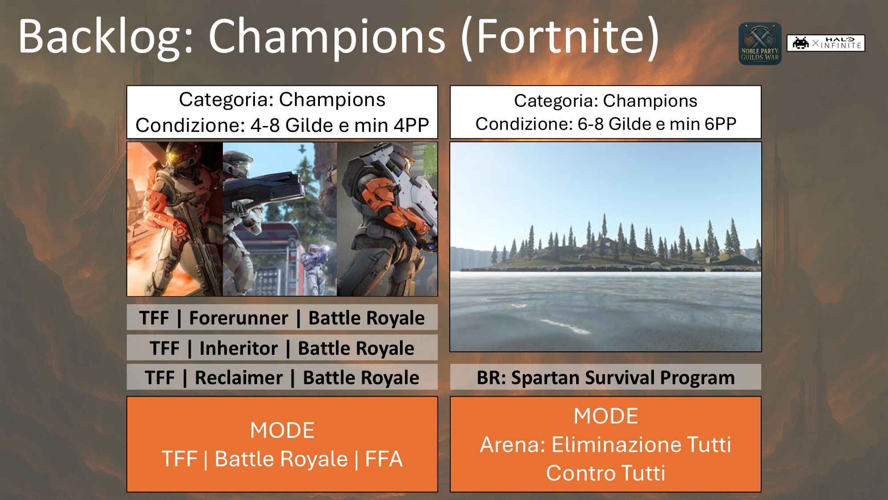
Lista di Social addizionali che ogni Gilda o Armata utilizza a piacere durante il loro turno.
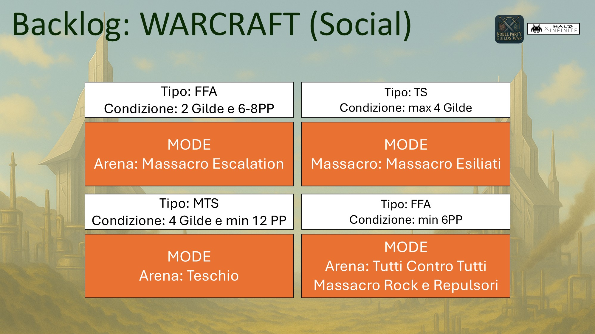
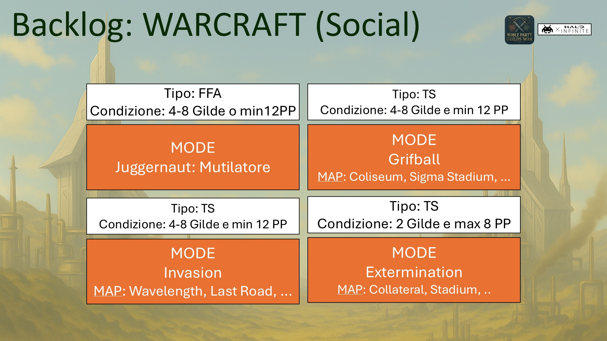
Lista di Sketch, quindi Mode+Mappa, che ogni Gilda o Armata utilizza a piacere durante il loro turno se sceglie una partita Sketch.
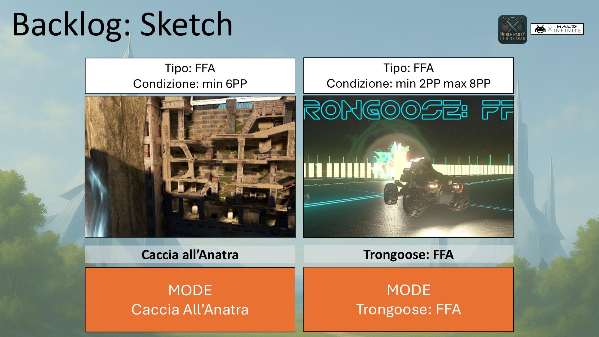
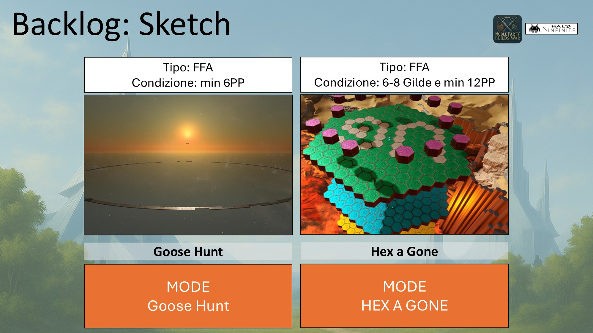
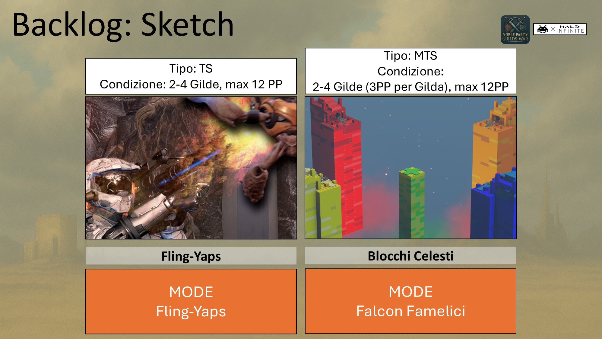
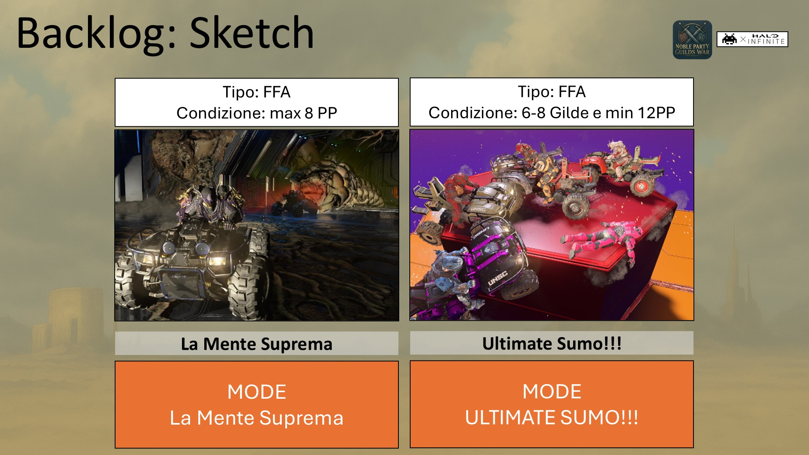
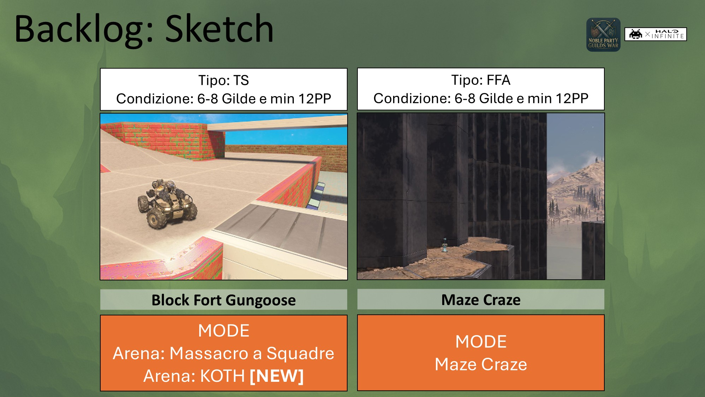
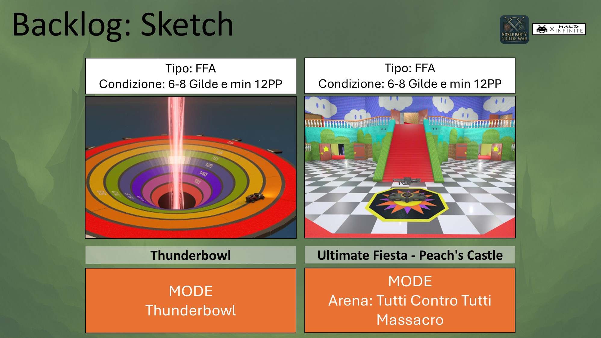
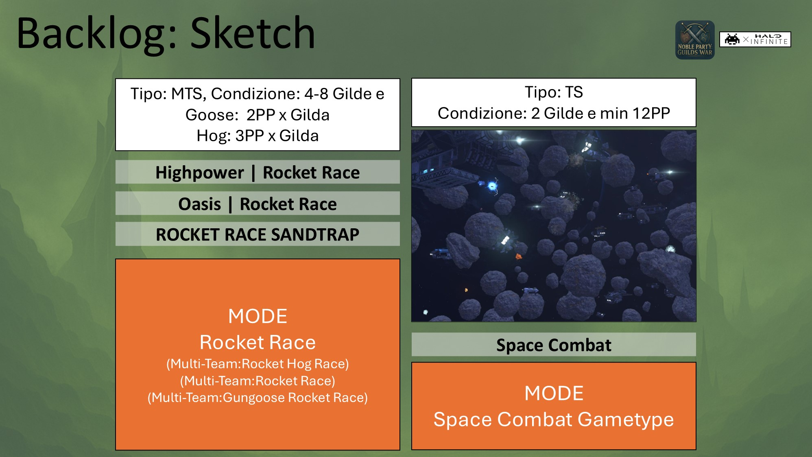
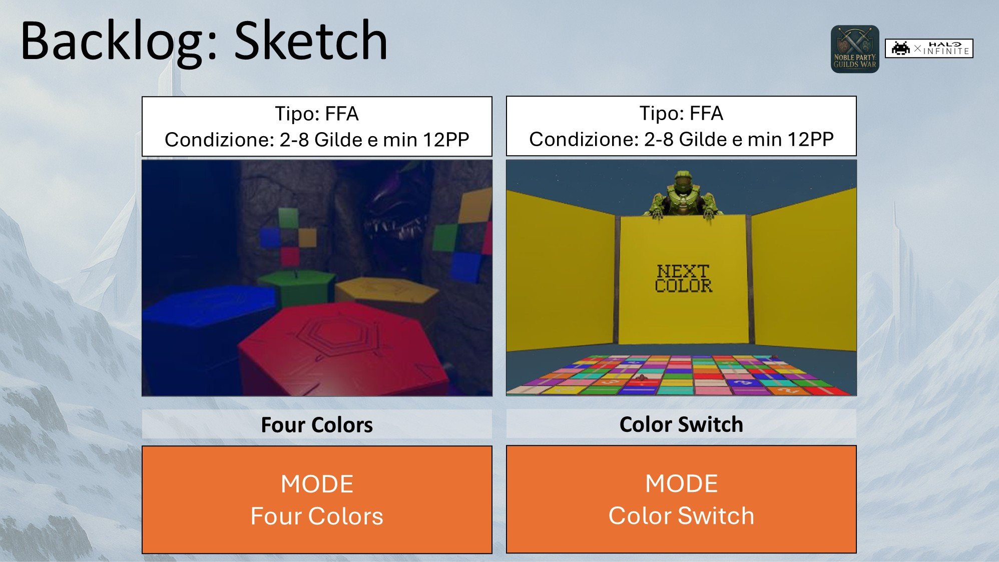
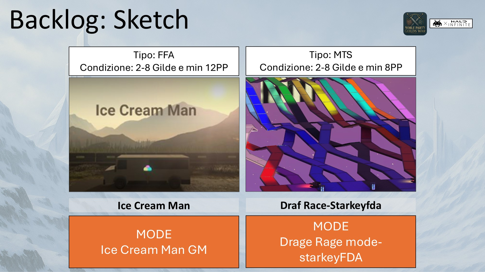
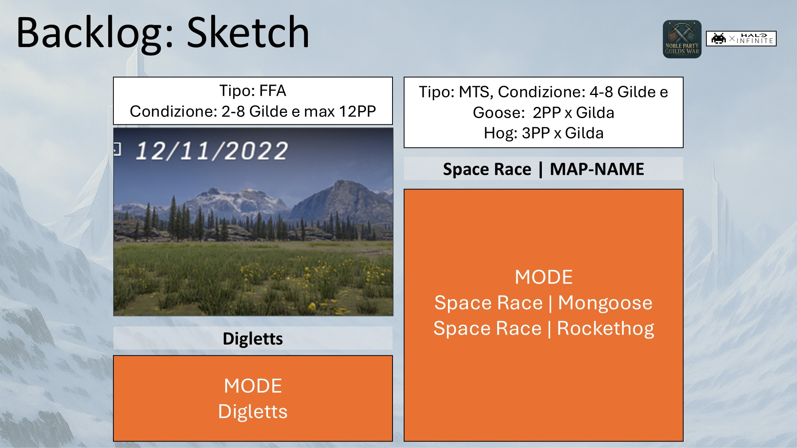

Prima di giocare ricordati di leggere il Regolamento.

Gilda Ade, Gilda Aquila, Gilda Bastione, Gilda Cobra, Gilda Pericolo, Gilda Sciabola, Gilda Valchiria, Gilda Valore.